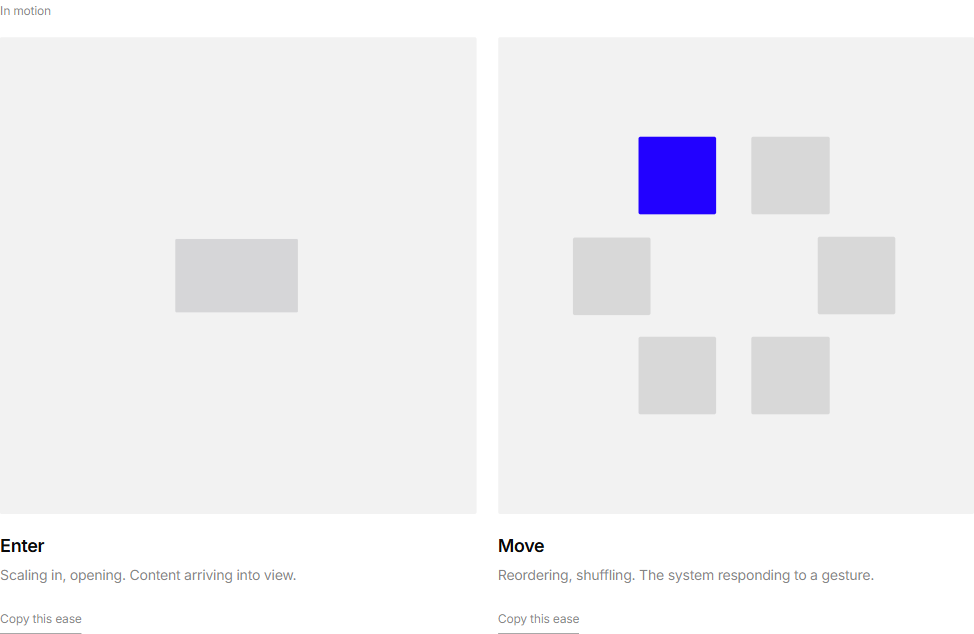
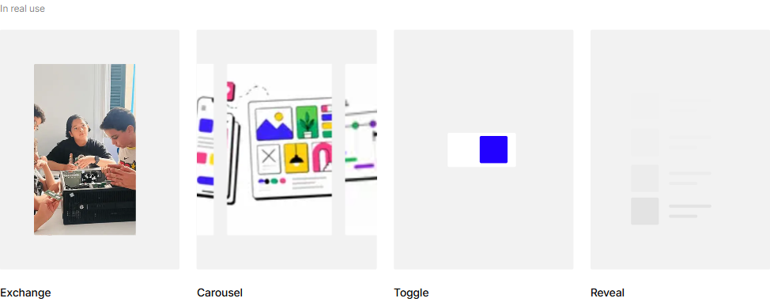
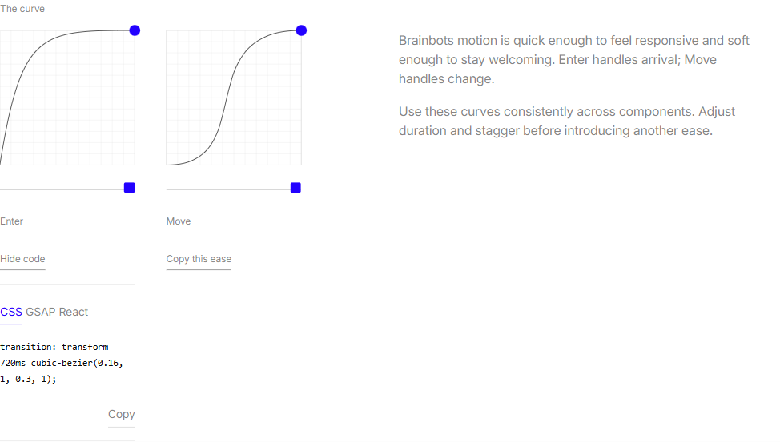
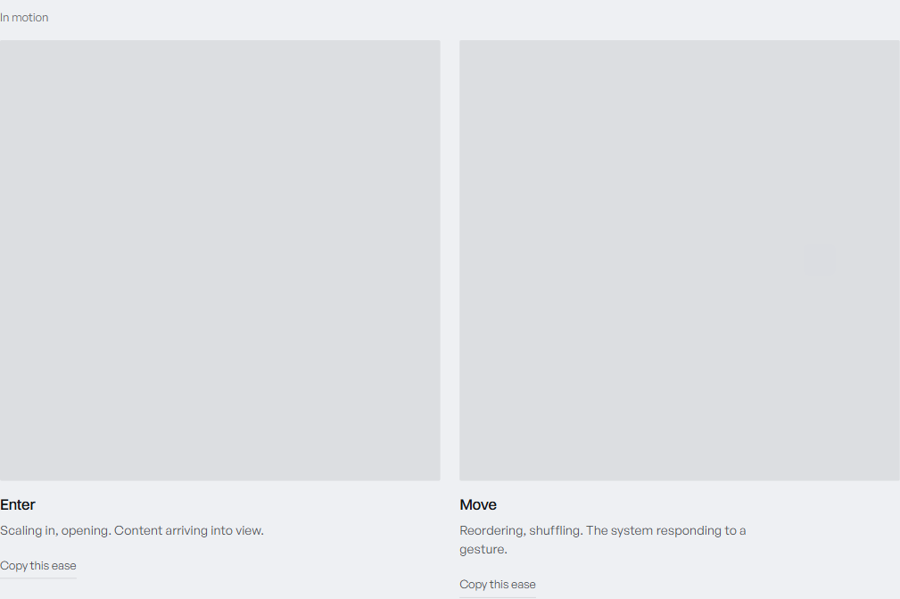

Brainbots Motion Section
All loops continue offscreen. Move now has a tighter 25ms stagger, Carousel has a visible slide gutter, and Reveal uses one neutral gray with balanced vertical breathing room.
Current state



Reference comparison

Improvements applied
1. Continuous timelines
Viewport observers were removed from all Motion animations. Scrolling no longer restarts or fast-forwards their timelines.
on screen ---- timeline ----> off screen ---- same timeline ---->
2. Refined primary demonstrations
Enter moves between 60% and 100% scale. Move uses smaller tiles, a tighter oval, an 840ms configured shift, staggered followers, and a one-second pause.
square square
square accent
square square
3. Discrete real-use gestures
Exchange uses symmetrical timing. Carousel matches Exchange's measured image width, reveals both neighboring edges even while settled, and clips only at the shaded stage boundary. Reveal uses only the shared neutral gray and has a verified 63px structural inset above and below its rows at desktop size.
Exchange: A [hold] -> B [hold] -> A Carousel: 1 [hold] -> 2 [hold] -> 3 [hold] -> 1 Reveal: placeholder rows enter with configured stagger
What's working
- All six stages are borderless.
- Move followers begin only 25ms apart.
- Curve format tabs have approximately 4px gaps.
- Exchange and Carousel image widths differ by less than 0.02px.
- A settled carousel slide exposes roughly 25px of the previous image and 40px of the next.
- Copy sits approximately 17px below the code output.
- Move tiles retain more than 6px of clearance through the sampled shift.
- Exchange and Carousel use Move; Toggle uses Enter.
- Reveal uses Enter.
- The carousel reset is visually seamless.
- Reduced-motion states remain static and legible.
Reference: VANTA brand guidelines.